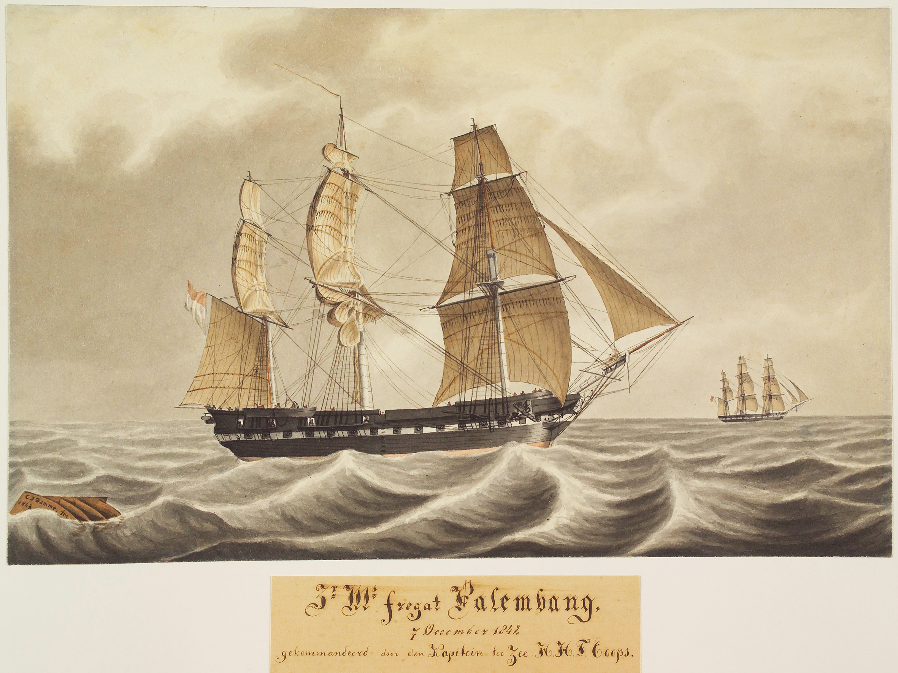
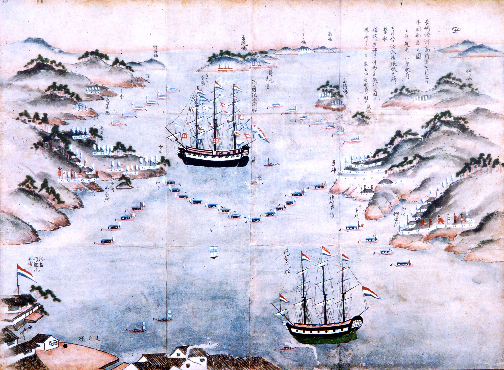
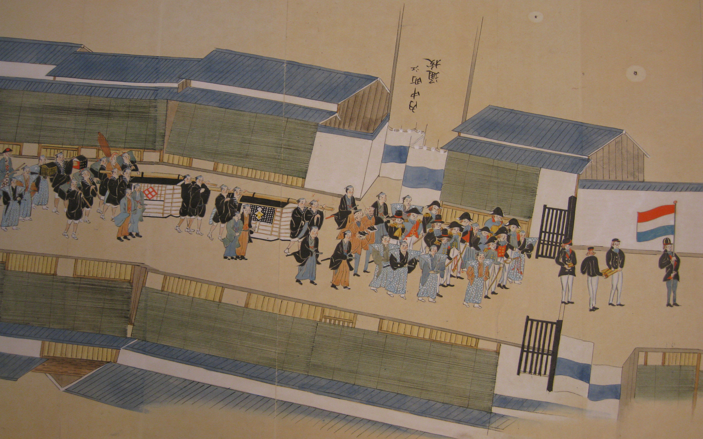
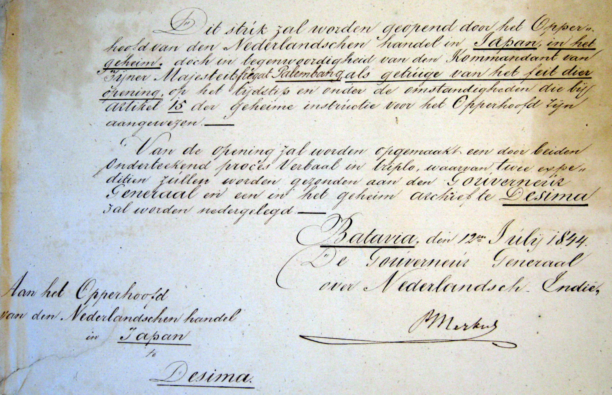
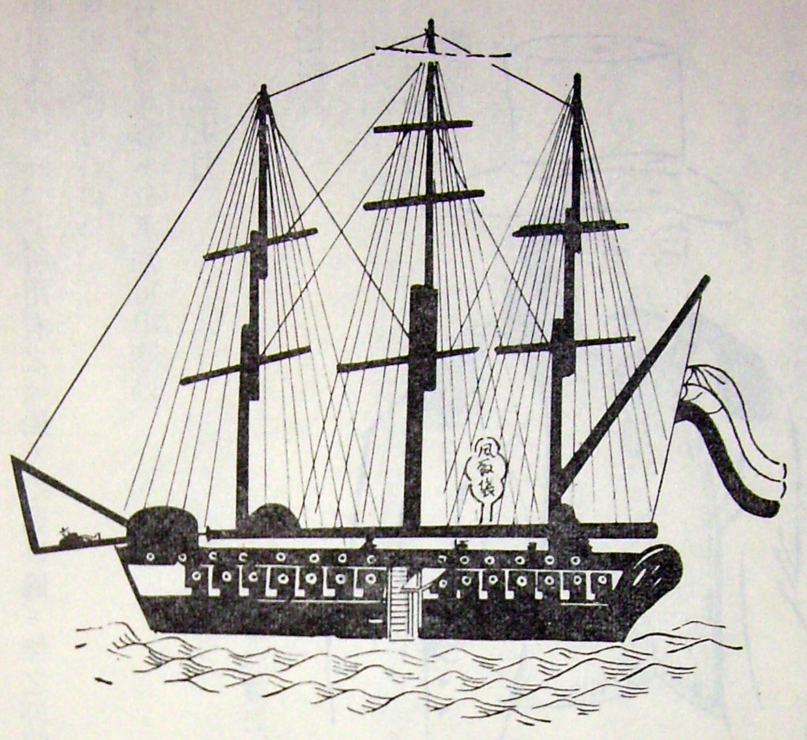

Een brief van koning Willem II
In 1844 vroeg koning Willem II de Japanse regering per brief om haar havens verder open te stellen. De Nederlandse handel verliep via Deshima (Dejima) bij Nagasaki en stond onder Japans toezicht. Minister van Koloniën Jean Chrétien Baud werkte in maart 1844 aan de geheime instructies. In Batavia kwamen de brief en zeventien kisten met geschenken, waaronder een portret van de koning, aan boord van de Palembang.


C.J. Damme. Het Scheepvaartmuseum, Amsterdam, inv. A.3015.
Het fregat vertrok in juli 1844 uit Batavia en kwam op 15 augustus aan in de baai van Nagasaki. Kapitein-ter-zee Herman Hendrik Timotheus Coops kreeg de taak de brief aan te bieden. Pieter Albert Bik, hoofd van de Nederlandse handelspost, bemiddelde bij het overleg met de Japanse autoriteiten.


Bibliotheek van de medische faculteit van de Universiteit van Nagasaki. Reproductie uit het familiedossier.
De brief gaat aan land
Na aankomst onderhandelden de Nederlanders en Japanners over de toegang tot de baai, de kruitvoorraad en het ceremonieel. De gouverneur wilde instructies uit Edo afwachten. Op 1 oktober trok de delegatie naar het gouvernementshuis. Scheepsmuzikanten liepen voorop, gevolgd door de Nederlandse vlag en het kistje met de brief. Coops bood de brief aan de gouverneur van Nagasaki aan, die hem naar Edo liet doorsturen.


Het Scheepvaartmuseum, Amsterdam, inv. A.1871. De volledige rolprent meet 37 × 612 cm.


Nationaal Archief, Collectie 302 Bik, toegang 2.21.024, inv. 46.
Het bezoek door Nederlandse en Japanse ogen
Luitenant-ter-zee Olke Arnoldus Uhlenbeck schreef kritisch over zijn commandant en over de omgang met de Japanse autoriteiten. Bik en de marinier J.J. Soer leggen in hun verslagen andere accenten. Het rapport van Coops zelf beschrijft uitvoerig het overleg over de ontvangst en het bezoek van de gouverneur aan boord.
Ook Nabeshima Naomasa, heer van het domein Saga en betrokken bij de verdediging van Nagasaki, bezocht het fregat. Hij kon het schip en de bewapening van dichtbij bekijken. Furukawa Matsune legde het bezoek vast op een rolprent die wordt bewaard in het Chōkokan-museum in Saga. De Nederlandse en Japanse bronnen geven verschillende data voor dit bezoek.


Tsūkō Ichiran Zokushū, deel 2 (1986). Foto drs. I. Tanaka-van Daalen.
Het antwoord uit Japan
In november 1844 kwam een eerste reactie uit Edo. De ontvangst van de brief werd erkend en de geschenken werden voorlopig geweigerd. De Palembang vertrok op 27 november. Op 14 september 1845 kreeg Bik bericht dat de geschenken alsnog werden aanvaard. De Japanse regering hield vast aan haar handelsregels en vroeg om voortaan geen koninklijke brieven meer te sturen.
De havens gingen door deze missie niet verder open. Een decennium later veranderde de verhouding onder nieuwe druk, onder meer door de Amerikaanse expedities van commodore Matthew Perry.
Bronnen en beeldmateriaal
- W.J.C. Coops, Op koers naar Nagasaki (2015), hoofdstuk Een Japans avontuur, de bijlagen en de dossiers met instructies, verslagen en prenten.
- Nationaal Archief, Collectie 066 De Constant Rebecque, toegang 2.21.008.66, inv. 57, rapport van H.H.T. Coops over Nagasaki. Collectie 302 Bik, toegang 2.21.024, inv. 46.
- Het Scheepvaartmuseum, inv. A.1871 en S.1845(01). Universiteit van Nagasaki, bibliotheek van de medische faculteit. Chōkokan, Saga, Nabeshima Naomasa Orandasen Norikomi Zu. Willem van Gulik, Nederlanders in Nagasaki. Japanse prenten uit de 19de eeuw (1998).
Eerdere familiepublicatie van W.J.C. Coops
Over de marine-loopbaan van H.H.T. Coops is het een en ander te vinden in “Vierhonderd jaar Molenaars”. Hetgeen hieronder is beschreven betreft een bijzondere episode in de carrière van H.H.T. Coops.
Toen ik in Leiden begon met de studie Japanse Taal en Cultuur, wees mijn toemnalige hoogleraar, professor Boot, mij op het bestaan van een scriptie over een missie van H.H.T. Coops naar Japan!· “een van de zonderlingste geheime missies die onze diplomatie kent.”1
In het nu volgende zal ik enige details bepreken over deze missie. Waartoe diende deze missie? Dit had alles te maken met de Nederlandse poging tot openstelling van Japanse havens voor de internationale handel.
In de twee eeuwen voorafgaande aan de komst van H.H.T. Coops waren de Nederlanders de enige westerlingen die met Japan handel mochten drijven. De Britten, Portugezen en eventuele andere koloniale mogendheden, werden niet geaccepteerd. De Portugezen zijn in de Zeventiende Eeuw met behulp van de Hollanders, met veel geweld verjaagd uit Japan. De Japanners waren namelijk niet gediend van de Roomsche Missie en de Hollanders kwamen slechts voor de handel. Het drijven van de handel in Japan gebeurde overigens onder uiterst strenge voorwaarden. Zo werden zij eigenlijk alleen toegelaten op het kunstmatige eiland Deshima, voor de kust van Nagasaki. Slechts in zeer bijzondere gevallen was het de “bewoners” van Deshima toegestaan om aan land te komen. Andere westerse schepen werden gewoonweg met kanonskogels van de kust gehouden. In de eerste helft van de 19e eeuw oefenden de grote mogendheden een krachtige druk op Japan uit om zijn havens open te stellen voor de internationale handel. Zodoende voelde Koning Willem II zich verplicht, vanwege de eeuwenoude vriendschappelijke band tussen de Nederlanden en Japan, om de Keizer van Japan in een persoonlijke brief de raad te geven aan dat verlangen toe te geven.
Nadat de Koninklijke boodschap vanuit Nederland door luitenant-ter-zee O.A. Uhlenbeck naar Batavia was getransporteerd verliet Zr. Ms. Fregat “Palembang”, onder het bevel van kapitein-ter-zee H.H.T. Coops 21 juli 1844 de rede van Batavia, om op 15 augustus 1844 te arriveren voor de kust van Nagasaki.
Oorspronkelijk was het de bedoeling dat het “Opperhoofd der Factorij van den Nederlandsche handel in Japan” (Deshima), P.A. Bik, de Koninklijke boodschap zou overbrengen, maar vlak voor het vertrek naar Japan werd de aanbiedings-instructie gewijzigd: omdat de Japanners het Nederlandse opperhoofd tot de handelsstand, dat wil zeggen de onderste sport van de sociale ladder, rekenden, was het meer overeenkomstig de waardigheid van de koninklijke boodschap om commandant Coops de brief en de geschenken te laten overhandigen. Dit zou vermoedelijk meer indruk maken.2 Het was dan ook niet het gewone halfjaarlijkse koopvaardijschip, dat de brief moest brengen. De Palembang, onder het commando van H.H.T. Coops, was hiermee het eerste Nederlandse oorlogsschip dat Japan zou aandoen (de keuze voor H.H.T. Coops met zijn schip zal overigens niet een bijzondere reden hebben gehad. Er is althans niets over geschreven).
Er volgde een maandenlange tijd van onderhandelingen, vernederingen, verveling en wachten. Een periode die het meest levendig en meest persoonlijk is omschreven door luitenant-ter-zee O.A. Uhlenbeck, die met H.H.T. Coops mee voer. Uhlenbeck was bepaald niet positief onder de indruk van zijn meerdere. Hij beschrijft hoe Timotheus op een gegeven moment “allerlei wonderlijke contorsies van zijn lichaam maakt (...) met zijn ijselijk dikken buik en zijn groten roden kop”.
Na Uhlenbeck’s verslag te hebben gelezen, kan ik mij voorstellen dat er bij deze man enige ernstige twijfels bestaan over de diplomatieke vaardigheden van Timotheus die zich, onbekend met de gewoonten der Japanners, menig maal in de luren liet leggen. Uhlenbeck schrijft in zijn verslag het volgende:
“Hij (H.H.T. Coops) embarkeerde met het Opperhoofd (Bik), die het in dikte nog van hem won, in een vaartuig dat veel overeenkomsten had met een Hollandse kalverschuit, onder het gelach van alle Japanners."
Dit is vooral een goed voorbeeld van de vernederingen die H.H.T. Coops moest ondergaan, omdat de Nederlanders in het algemeen vrij waren om hun eigen sloepen te gebruiken, en niet de Japanse kalverschuiten. Overigens toont dit stukje tekst ook de persoonlijke afkeer van Uhlenbeck jegens H.H.T. Coops. Nog een (gefrustreerde?) uitlating:
“Het uitzicht op ridderorden bracht den twee Dikken een glans van genoegen op het gelaat terwijl hun ogen op alleszins merkwaardige wijze begonnen te schitteren...” (ridder in de orde van de Nederlandse Leeuw)
Nu een goed voorbeeld van gedrag dat bij Japanners, heden ten dage nog steeds, niet het vereiste vertrouwen wekt:
"Tegenover de overdreven beleefdheid stond een voor de Nederlanders volstrekt verwerpelijke onzedelijkheid: veelwijverij en het geregeld bezoeken van een van de vele theehuizen, waar publieke vrouwen de Japanners verwenden, was algemeen gebruik en geoorloofd in Japan. ...Eerder had Coops tijdens het onderhoud met de Japanse tolken uit onwetenheid zijn militaire waardigheid bezoedeld. Met een bulderende en daarom onwelvoeglijke schaterlach had hij de nauwelijks verholen uitnodiging van de hand gewezen om op Deshima in aangenaam gezelschap van een Japanse vrouw de nacht door te brengen.”3
Hier openbaart zich een cultuurverschil waar, met Timotheus, menig westerling problemen mee zou hebben in Japan. Ook wanneer u nu naar Japan gaat, zal u dit opvallen!
Het verblijf werd de Nederlanders niet makkelijk gemaakt op Deshima. Om het kort te houden zou ik de situatie waarin zij verkeerden willen vergelijken met een gevangenis. Daar komt bij dat de diplomatieke banden met Japan op dat moment aardig waren bekoeld vanwege de angst die er bij de regeerders van Japan heerste, voor de toenemende internationale militaire dreiging (de Britten waren in oorlog in China). Wanneer u zich bedenkt dat het verblijf van H.H.T. Coops op Deshima duurde tot 27 november, bijna vier maanden, en dat hij gedurende die tijd bepaald niet werd behandeld met de égards die hij gewend zal zijn geweest, dan kan ik mij het humeur van H.H.T. Coops wel enigszins voorstellen.
Tussendoor: Het Gelderse bloed van H.H.T. Coops bleek overigens niet te verloochenen, toen hij Koning Willem II bij herhaling Koning van Holland noemde, in plaats van Koning der Nederlanden (ook bij de officiële aanbieding van de brief aan de gouverneur van Nagasaki). Dit heeft bij Uhlenbeck ook de nodige irritatie opgewekt.
Indien u een uitgebreidere weergave van het verslag van de heer Uhlenbeck wenst te lezen dan kunt u het beste de Spiegel Historiael en het Intermediair4 raadplegen. Hierin vindt u ook verwijzingen naar andere literatuur. De verslagen van het opperhoofd P.A. Bik en tweede luitenant der Mariniers J.J. Soer zijn overigens een stuk positiever dan die van Uhlenbeck.
Zo vermeldt opperhoofd Bik dat hij “zich aan boort begaf, alwaar ik door den Kommandant met de meeste beleefdheid werd ontvangen...” En waar Uhlenbeck zich negatief uitlaat over de discipline aan boord van de Palembang, beschrijven zowel Bik als Soer de exercities als een “Groote parade”.
Niet te ontkennen valt dat H.H.T. Coops het heeft gebracht tot schout-bij-nacht, om uiteindelijk als vice-admiraal tit. de actieve dienst vaarwel te zeggen, hetgeen mij een heldere aanwijzing lijkt dat hij hoe dan ook zijn sporen wel verdiend moet hebben binnen Neêrlands Marine.
De uitkomst van de vredelievende poging van Koning Willem II om Japan toegankelijk te maken voor de internationale handel, kwam pas maanden later. De Japanse regering was niet van plan om het Nederlandse advies op te volgen. De missie was mislukt. Pas vanaf het moment dat in 1854 de Amerikaanse commodore M.G. Perry met zijn eskader voor de kust van Edo lag, ging de Japanse regering over stag.
“Niet het braaf zwijgende geschut van de Palembang in de baai van Nagasaki, maar Perry’s geladen kanonnen gericht op Edo (oude benaming voor Tokyo), creëerden de noodsituatie die de bakufu (regeerders) dwong een duidelijke beslissing te nemen en Japan voor de internationale handel open te stellen.” 5
In het Amsterdamse Scheepvaartmuseum bevindt zich een kopie van een rolschilderij (Makimono) van 5,40 m lang en 37,5 cm hoog. Op deze makimono wordt de stoet, ter aanbieding van de koninklijke boodschap, door Nagasaki weergegeven. Tevens bevindt zich aldaar een prent van de officiële presentatie van de brief van Koning Willem II aan de gouverneur van Nagasaki door Timotheus en opperhoofd Bik in de receptiezaal van het paleis van de gouverneur. Verder vindt u daar vele documenten waaronder bevorderingen in militaire rangen en benoemingen in enkele van de orden die u hieronder zult aantreffen, zijn doop- en huwelijksakten en enkele prenten van de Palembang.
Indien u een persoonlijk door H.H.T. Coops geschreven verslag van zijn verblijf in Nagasaki wilt lezen dan vindt u in het ARA het “Rapport der verrigtingen door den ondergetekenden kommandant van Z.M. Fregat Palembang., na arrivement op den 15 Augustus 1844 in de baai van Nagasakie”.
Het opschrift op het houten kistje waarin zich de Makimono bevindt, luidt: “1844 Oranda tokushi Coops ikko Nagasaki Tateyama shoyaku homon no zu.” (Tekening van de opwachting van het bijzondere gezantschap Coops op het gouvernementshuis Tateyama te Nagasaki)
W.J.C. Coops
· bewerkte scriptie voor het doctoraal bijvak Geschiedenis van de Westeuropese expansie aan de Rijksuniversiteit Leiden, door E.M. Jacobs onder begeleiding van prof. dr C. Fasseur.
1
Missie naar Japan, 1844. een merkwaardige gebeurtenis uit Nederlands
diplomatieke verleden. Door A. Korthals Altes. Intermediair 14e jrg. 42 -
20 oktober 1978.
2
bewerkte scriptie door E.M. Jacobs
3
idem.
4
zie noot 1 + Koning Willem II schrijft de Keizer van Japan - A. Korthals
Altes. “Spiegel Historiael” febr. 1978
5
bewerkte scriptie door E.M. Jacobs